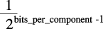

Bitmap Images and Image Masks
Bitmap images and image masks are like any drawing primitive in Quartz. Both images and image masks in Quartz are represented by the CGImageRef data type. As you’ll see later in this chapter, there are a variety of functions that you can use to create an image. Some of them require a data provider or an image source to supply bitmap data. Other functions create an image from an existing image either by copying the image or by applying an operation to the image. No matter how you create a bitmap image in Quartz, you can draw the image to any flavor of graphics context. Keep in mind that a bitmap image is an array of bits at a specific resolution. If you draw a bitmap image to a resolution-independent graphics context (such as a PDF graphics context) the bitmap is limited by the resolution at which you created it.
There is one way to create a Quartz image mask—by calling the function CGImageMaskCreate. You’ll see how to create one in “Creating an Image Mask.” Applying an image mask is not the only way to mask drawing. The sections “Masking an Image With Color,” “Masking an Image With an Image Mask,” and “Masking an Image by Clipping the Context” discuss all the masking methods available in Quartz.
In this section:
About Bitmap Images and Image Masks
Bitmap Image Information
Creating Images
Creating an Image Mask
Masking Images
Using Blend Modes With Images
About Bitmap Images and Image Masks
A bitmap image (or sampled image) is an array of pixels (or samples). Each pixel represents a single point in the image. JPEG, TIFF, and PNG graphics files are examples of bitmap images. In Mac OS X, icons are bitmap images. Bitmap images are restricted to rectangular shapes. But with the use of alpha, they can appear to take on a variety of shapes and can be rotated and clipped, as shown in Figure 11-1.
Each sample in a bitmap contains one or more color components in a specified color space, plus one additional component that specifies the alpha value to indicate transparency. Each component can be from 1 to as many as 32 bits. Mac OS X v10.4 adds support for 128-bit floating-point components. ColorSync provides color space support for bitmap images.
Quartz also supports image masks. An image mask is a bitmap that specifies an area to paint, but not the color. In effect, an image mask acts as a stencil to specify where to place color on the page. Quartz uses the current fill color to paint an image mask. An image mask can have a depth of 1 to 8 bits.
Bitmap Image Information
Quartz supports a wide variety of image formats and has built-in knowledge of several popular formats. In Mac OS X v10.1, Quartz provides a convenience function for working with bitmap images that use JPEG-encoded data. A similar function is available for working with PNG-encoded data starting with Mac OS X v10.2. Mac OS X v10.4 supports many formats, including JPEG, PNG, TIFF, GIF, and JPEG2000. Other bitmap image formats or proprietary formats require that you specify details about the image format to Quartz in order to ensure that images are interpreted correctly.
This section describes the information associated with a bitmap image. When you create and work with Quartz images (which use the CGImageRef data type), you’ll see that some Quartz image-creation functions require you to specify all this information, while other functions require a subset of this information. What you provide depends on the encoding used for the bitmap data, and whether the bitmap represents an image or an image mask.
Quartz uses the following information when it creates a bitmap image (CGImageRef):
A bitmap data source, which can be a Quartz data provider or a Quartz image source. “Data Management” describes both and discusses the functions that provide a source of bitmap data.
An optional “Decode Array.”
An interpolation setting, which is a Boolean value that specifies whether Quartz should apply an interpolation algorithm when resizing the image.
A rendering intent that specifies how to map colors that are located within the destination color space of a graphics context. This information is not needed for image masks. See “Setting Rendering Intent” for more information.
The image dimensions.
“Pixel Format,” which includes bits per component, bits per pixel, and bytes per row.
For images, “Color Spaces and Bitmap Layout” information to describe the location of alpha and whether the bitmap uses floating-point values. Image masks don’t require this information.
Decode Array
A decode array maps the image color values to other color values, which is useful for such tasks as desaturating an image or inverting the colors. The array contains a pair of numbers for each color component. When Quartz renders the image, it applies a linear transform to map the original component value to a relative number within the designated range appropriate for the destination color space. For example, the decode array for an image in the RGB color space contains six entries, one pair for each red, green, and blue color component.
Pixel Format
The pixel format consists of the following information:
Bits per component, which is the number of bits in each individual color component in a pixel. For an image mask, this value is the number of significant masking bits in a source pixel. For example, if the source image is an 8-bit mask, specify 8 bits per component.
Bits per pixel, which is the total number of bits in a source pixel. This value must be at least the number of bits per component times the number of components per pixel.
Bytes per row. The number of bytes per horizontal row in the image.
Color Spaces and Bitmap Layout
To ensure that Quartz correctly interprets the bits of each pixel, you must specify:
Whether a bitmap contains an alpha channel. Quartz supports RGB, CMYK, and Gray color spaces. It also supports alpha, or transparency, although alpha information is not available in all bitmap image formats. When it is available, the alpha component can be located in either the most significant bits of a pixel or the least significant bits.
For bitmaps that have an alpha component, whether the color components are already multiplied by the alpha value. Premultiplied alpha describes a source color whose components are already multiplied by an alpha value. Premultiplying speeds up the rendering of an image by eliminating an extra multiplication operation per color component. For example, in an RGB color space, rendering an image with premultiplied alpha eliminates three multiplication operations (red times alpha, green times alpha, and blue times alpha) for each pixel in the image.
The data format of the samples—integer or floating-point values. Quartz supports floating-point formats starting in Mac OS X v10.4.
When you create an image using the function CGImageCreate, you supply a bitmapInfo parameter, of type CGImageBitmapInfo, to specify bitmap layout information. The following constants specify the location of the alpha component and whether the color components are premultiplied:
kCGImageAlphaLast—the alpha component is stored in the least significant bits of each pixel, for example, RGBA.kCGImageAlphaFirst—the alpha component is stored in the most significant bits of each pixel, for example, ARGB.kCGImageAlphaPremultipliedLast—the alpha component is stored in the least significant bits of each pixel, and the color components have already been multiplied by this alpha value.kCGImageAlphaPremultipliedFirst—the alpha component is stored in the most significant bits of each pixel, and the color components have already been multiplied by this alpha value.kCGImageAlphaNoneSkipLast—there is no alpha channel. If the total size of the pixel is greater than the space required for the number of color components in the color space, the least significant bits are ignored.kCGImageAlphaNoneSkipFirst—there is no alpha channel. If the total size of the pixel is greater than the space required for the number of color components in the color space, the most significant bits are ignored.kCGImageAlphaNone—equivalent tokCGImageAlphaNoneSkipLast.
You use the constant kCGBitmapFloatComponents to indicate a bitmap format that uses floating-point values. For floating-point formats, you logically OR this constant with the appropriate constant from the previous list. For example, for a 128 bits per pixel floating-point format that uses premultiplied alpha, with the alpha located in the least significant bits of each pixel, you supply the following information to Quartz:
kCGImageAlphaPremultipliedLast|kCGBitmapFloatComponents
Figure 11-2 visually depicts how pixels are represented in CMYK and RGB color spaces that use 16- or 32-bit integer formats. The 32-bit integer pixel formats use 8 bits per component. The 16-bit integer format uses 5 bits per component. As of Mac OS X v10.4, Quartz 2D also supports 128-bit floating-point pixel formats that use 32 bits per component. The 128-bit formats are not shown in the figure.
Creating Images
Quartz provides a variety of functions that create a CGImage object from a bitmap image. The choice of image creation function depends on the source of the image data and the version of the operating system your software needs to run in. The most flexible function is CGImageCreate. It creates an image from any kind of bitmap data and the function runs in all versions of Mac OS X. However, it’s the most complex function to use because you must specify all bitmap information. To use this function, you need to be familiar with the topics discussed in “Bitmap Image Information.”
Each version of the operating system introduces new image creation functions, as you’ll see by looking at Table 11-1. If your application runs in Mac OS X v10.4 and later, and you want to create a CGImage object from an image file that uses a standard image format such as PNG or JPEG, the easiest solution is to call the function CGImageSourceCreateWithURL to create an image source and then call the function CGImageSourceCreateImageAtIndex to create an image from the image data at a specific index in the image source. If the original image file contains only one image, then provide 0 as the index. If the image file format supports files that contain multiple images, you need to supply the index to the appropriate image, keeping in mind that the index values start at 0.
If you’ve drawn content to a bitmap graphics context and want to capture that drawing to a CGImage, call the function CGBitmapContextCreateImage. This function, like many of the functions in Table 11-1, is available only in Mac OS X v10.4.
Several functions are utilities that operate on existing images, either to make a copy, create a thumbnail, or create an image from a portion of a larger one. Regardless of how you create a CGImage object, you use the function CGContextDrawImage to draw the image to any “flavor” of graphics context. Keep in mind that CGImage objects are immutable. When you no longer need a CGImage object, release it by calling the function CGImageRelease.
Function | Description |
|---|---|
| A flexible function for creating an image. You must specify all the bitmap information that is discussed in “Bitmap Image Information.” Available in Mac OS X v10.0 and later. |
| Creates an image from a data provides that supplies JPEG-encoded data. See “Data Management” for information on creating a JPEG data provider. Available in Mac OS X v10.1 and later. |
| Creates an image from a data provider that supplies PNG-encoded data. See “Data Management” for information on creating a PNG data provider. Available in Mac OS X v10.2 and later. |
| Creates an image from the data contained within a subrectangle of an image. Available in Mac OS X v10.4 and later. |
| Creates an image from an image source. Image sources can contain more than one image. See “Data Management” for information on creating an image source. Available in Mac OS X v10.4 and later. |
| Creates a thumbnail image of an image that is associated with an image source. See “Data Management” for information on creating an image source. Available in Mac OS X v10.4 and later. |
| Creates an image by copying the bits from a bitmap graphics context. Available in Mac OS X v10.4 and later. |
| A utility function that creates a copy of an image. Available in Mac OS X v10.4 and later. |
| A utility function that creates a copy of an image and replaces its colorspace. Available in Mac OS X v10.3 and later. |
The sections that follow discuss how to create:
An image from a JPEG file using a data provider.
A subimage from an existing image.
An image from a bitmap graphics context.
You can consult these sources for additional information:
“Data Management” discusses data consumers, data providers, image sources, and image destinations, and how to use each to read and write image data.
CGImage Reference, CGImageSource Reference, and CGBitmapContext Reference for further information on the functions listed in Table 11-1 and their parameters.
Creating an Image From a JPEG File
The function CGImageCreate creates a CGImage object from bitmap image information that you supply (discussed in “Bitmap Image Information”). If the bitmap image uses JPEG- or PNG-encoded data, it’s much easier to use the convenience functions CGImageCreateWithJPEGDataProvider or CGImageCreateWithPNGDataProvider. If your code runs in Mac OS X v10.4 and later, you also have the option of creating an image source from a URL using CGImageSourceCreateWithURL and then create an image from the image source by calling the function CGImageSourceCreateImageAtIndex. The image at the URL location can be one of any number of formats, including PNG, TIFF, JPEG, JPEG2000, and GIF.
Listing 11-1 shows a function that creates a CGImage object with data that is supplied by a JPEG data provider, and then draws the image to a graphics context passed to the function. Quartz uses its knowledge of the JPEG file format to decode the file and create a CGImage object from it. The code in this listing works in Mac OS X v10.1 and later. A detailed explanation for each numbered line of code appears following the listing.
Listing 11-1 A function that creates a CGImage object from a JPEG file
void MyCreateAndDrawBitmapImage (CGContextRef myContext, // 1 |
CGRect myContextRect, |
const char *filename); |
{ |
CGImageRef image; |
CGDataProviderRef provider; |
CFStringRef path; |
CFURLRef url; |
path = CFStringCreateWithCString (NULL, filename, |
kCFStringEncodingUTF8); |
url = CFURLCreateWithFileSystemPath (NULL, path, // 2 |
kCFURLPOSIXPathStyle, NULL); |
CFRelease(path); |
provider = CGDataProviderCreateWithURL (url);// 3 |
CFRelease (url); |
image = CGImageCreateWithJPEGDataProvider (provider,// 4 |
NULL, |
true, |
kCGRenderingIntentDefault); |
CGDataProviderRelease (provider);// 5 |
CGContextDrawImage (myContext, myContextRect, image);// 6 |
CGImageRelease (image);// 7 |
} |
Here’s what the code does:
Takes as parameters a graphics context, the rectangle to draw into, and a filename.
Calls the Core Foundation function for creating a CFURL object that specifies the location of the file to open.
Creates a data provider object from the CFURL object. See “Data Management” for information on data providers.
Creates a CGImage object from the data provider. If you don’t need to map color component values to another range, you can pass
NULLfor the decode array, as in this example. In most cases, you should passtrueto turn on interpolation. The constantkCGRenderingIntentDefaultspecifies that Quartz use the default for the graphics context.Releases the data provider when it is no longer needed.
Draws the bitmap image to the graphics context supplied, drawing into the area specified by the
myContextRectrectangle.Releases the CGImage object when it is no longer needed.
Creating an Image From Part of a Larger Image
The function CGImageCreateWithImageInRect lets you create a subimage from an existing Quartz image. Figure 11-3 illustrates extracting an image that contains the letter “A” from a larger image by supplying a rectangle that specifies the location of the letter “A”.
The image returned by the function CGImageCreateWithImageInRect retains a reference to the original image, which means you can release the original image after calling this function.
Figure 11-4 shows another example of extracting a portion of an image to create another image. In this case, the rooster’s head is extracted from the larger image, and then drawn to a rectangle that’s larger than the subimage, effectively zooming-in on the image.
Listing 11-2 shows code that creates and then draws the subimage. The rectangle that the function CGContextDrawImage draws the rooster’s head to has dimensions that are twice the dimensions of the extracted subimage. The listing is a code fragment. You’d need to declare the appropriate variables, create the rooster image, and dispose of the rooster image and the rooster head subimage. Because the code is a fragment, it does not show how to create a the graphics context that the image is drawn to. You can use an flavor of graphics context that you’d like. For examples of how to create a graphics context, see “Graphics Contexts.”
Listing 11-2 Code that creates a subimage and draws it enlarged
myImageArea = CGRectMake (rooster_head_x_origin, rooster_head_y_origin, |
myWidth, myHeight); |
mySubimage = CGImageCreateWithImageInRect (myRoosterImage, myImageArea); |
myRect = CGRectMake(0, 0, myWidth*2, myHeight*2); |
CGContextDrawImage(context, myRect, mySubimage); |
Creating an Image From a Bitmap Graphics Context
To create an image from an exiting bitmap graphics context, you call the function CGBitmapContextCreateImage as follows:
CGImageRef myImage; |
myImage = CGBitmapContextCreateImage (myBitmapContext); |
The CGImage object returned by the function is created by a copy operation. This means that any subsequent changes you make to the bitmap graphics context do not affect the contents of the returned CGImage. In some cases the copy operation actually follows copy-on-write semantics, so that the actual physical copy of the bits occurs only if the underlying data in the bitmap graphics context is modified. You may want to use the resulting image and release it before you perform additional drawing into the bitmap graphics context so that you can avoid the actual physical copy of the data.
For an example that shows how to create a bitmap graphics context, see“Creating a Bitmap Graphics Context.”
Creating an Image Mask
A Quartz bitmap image mask is used the same way an artist uses a silkscreen. A bitmap image mask determines how color is transferred, not which colors are used. Each sample value in the image mask specifies the amount that the current fill color is masked at a specific location. The sample value specifies the opacity of the mask. Larger values represent greater opacity and specify locations where Quartz paints less color. You can think of the sample value as an inverse alpha value. A value of 1 is transparent and 0 is opaque.
Image masks are 1, 2, 4, or 8 bits per component. For a 1-bit mask, a sample value of 1 specifies sections of the mask that block the current fill color. A sample value of 0 specifies sections of the mask that show the current fill color of the graphics state when the mask is painted. You can think of a 1-bit mask as black and white; samples either completely block paint or completely allow paint.
Image masks that have are 2, 4, or 8 bits per component represent grayscale values. Each component maps to a range of 0 to 1 using the following formula:

For example, a 4-bit mask has values that range from 0 to 1 in increments of 1/15 . Component values that are 0 or 1 represent the extremes—completely block paint and completely allow paint. Values between 0 and 1 allow partial painting using the formula 1 – MaskSampleValue. For example, if the sample value of an 8-bit mask scales to 0.7, color is painted as if it has an alpha value of (1 – 0.7), which is 0.3.
The function CGImageMaskCreate creates a Quartz image mask from bitmap image information that you supply and that is discussed in “Bitmap Image Information.” The information you supply to create an image mask is the same as what you supply to create an image, except that you do not supply colorspace information, a bitmap information constant, or a rendering intent, as you can see by looking at the function prototype in Listing 11-3.
Listing 11-3 The prototype for the function CGImageMaskCreate
CGImageRef CGImageMaskCreate ( |
size_t width, |
size_t height, |
size_t bitsPerComponent, |
size_t bitsPerPixel, |
size_t bytesPerRow, |
CGDataProviderRef provider, |
const float decode[], |
int shouldInterpolate |
); |
Quartz image masks provide one way to control where and how Quartz paints color. “Masking Images” shows how to use a Quartz image mask to mask an image or to clip a graphics context. The section also shows how to use color and grayscale images to achieve masking effects.
Masking Images
Masking techniques can produce many interesting effects by controlling which parts of an image are painted. You can:
Apply an image mask to an image. You can also use an image as a mask to achieve an effect that’s opposite from applying an image mask.
Use color to mask parts of an image, which includes the technique referred to as chroma-key masking.
Clip a graphics context to an image or image mask, which effectively masks an image (or any kind of drawing) when Quartz draws the content to the clipped context.
As you’ll see in the sections that follow, each approach gives a different effect.
Masking an Image With an Image Mask
The function CGImageCreateWithMask returns the image that’s created by applying an image mask to an image. This function, available in Mac OS X v10.4 and later, takes two parameters:
The image you want to apply the mask to. This image can’t be an image mask or have a masking color (see “Masking an Image With Color”) associated with it.
An image mask created by calling the function
CGImageMaskCreate. It’s possible to provide an image instead of an image mask, but that gives a much different result. See “Masking an Image With an Image.”
Source samples of an image mask act as an inverse alpha value. An image mask sample value (S):
Equal to
1blocks painting the corresponding image sample.Equal to
0allows painting the corresponding image sample at full coverage.Greater than
0and less1allows painting the corresponding image sample at with an alpha value of(1 – S).
Figure 11-5 shows an image created with one of the Quartz image-creation functions while Figure 11-6 shows an image mask created with the function CGImageMaskCreate. Figure 11-7 shows the image that results from calling the function CGImageCreateWithMask to apply the image mask to the image.
Note that the areas in the original image that correspond to the black areas of the mask show through in the resulting image (Figure 11-7). The areas that correspond to the white areas of the mask aren’t painted. The areas that correspond to the gray areas in the mask are painted using an intermediate alpha value that’s equal to 1 minus the image mask sample value.
Masking an Image With an Image
You can use function CGImageCreateWithMask to mask an image with another image, rather than with an image mask. You would do this to achieve an effect opposite of what you get when you mask an image with an image mask. Instead of passing an image mask that’s created using the function CGImageMaskCreate, you supply an image created from one of the Quartz image-creation functions.
Source samples of an image that is used as a mask (but is not a Quartz image mask) operate as alpha values. An image sample value (S):
Equal to
1allows painting the corresponding image sample at full coverage.Equal to
0blocks painting the corresponding image sample.Greater than
0and less1allows painting the corresponding image sample with an alpha value ofS.
Figure 11-8 shows the image that results from calling the function CGImageCreateWithMask to apply the image shown in Figure 11-6 to the image shown in Figure 11-5. In this case, assume that the image shown in Figure 11-6 is created using one of the Quartz image-creation functions, such as CGImageCreate. Compare Figure 11-8 with Figure 11-7 to see how the same sample values, when used as image samples instead of image mask samples, achieve the opposite effect.
The areas in the original image that correspond to the black areas of the image aren’t painted in the resulting image (Figure 11-8). The areas that correspond to the white areas of are painted. The areas that correspond to the gray areas in the mask are painted using an intermediate alpha value that’s equal to the masking image sample value.
Masking an Image With Color
The function CGImageCreateWithMaskingColors creates an image by masking one color or a range of colors in an image supplied to the function. Using this function, you can perform chroma key masking similar to what’s shown in Figure 11-9 or you can mask a range of colors, similar to what’s shown in Figure 11-11, Figure 11-12, and Figure 11-13.
The function CGImageCreateWithMaskingColors takes two parameters:
An image that is not an image mask and that is not the result of applying an image mask or masking color to another image.
An array of color components that specify a color or a range of colors for the function to mask in the image.
The number of elements in the color component array must be equal to twice the number of color components in the color space of the image. For each color component in the color space, supply a minimum value and a maximum value that specifies the range of colors to mask. To mask only one color, set the minimum value equal to the maximum value. The values in the color component array are supplied in the following order:
{min[1], max[1], ... min[N], max[N]}, where N is the number of components.
If the image uses integer pixel components, each value in the color component array must be in the range [0 .. 2^bitsPerComponent - 1] . If the image uses floating-point pixel components, each value can be any floating-point number that is a valid color component.
An image sample is not painted if its color values fall in the range:
{c[1], ... c[N]}
where min[i] <= c[i] <= max[i] for 1 <= i <= N
Anything underneath the unpainted samples, such as the current fill color or other drawing, shows through.
The image of two tigers, shown in Figure 11-10, uses an RGB color space that has 8 bits per component. To mask a range of colors in this image, you supply minimum and maximum color component values in the range of 0 to 255.
Listing 11-4 shows a code fragment that sets up a color components array and supplies the array to the function CGImageCreateWithMaskingColors to achieve the result shown in Figure 11-11.
Listing 11-4 A code fragment that masks light to mid-range brown colors in an image
CGImageRef myMaskedImage; |
const float myMaskingColors[6] = {124, 255, 68, 222, 0, 165}; |
myColorMaskedImage = CGImageCreateWithMaskingColors (image, |
myMaskingColors); |
CGContextDrawImage (context, myContextRect, myColorMaskedImage); |
Listing 11-5 shows another code fragment that operates on the image shown in Figure 11-10 to get the results shown in Figure 11-12. This example masks a darker range of colors.
Listing 11-5 A code fragment that masks shades of brown to black
CGImageRef myMaskedImage; |
const float myMaskingColors[6] = { 0, 124, 0, 68, 0, 0 }; |
myColorMaskedImage = CGImageCreateWithMaskingColors (image, |
myMaskingColors); |
CGContextDrawImage (context, myContextRect, myColorMaskedImage); |
You can mask colors in an image as well as set a fill color to achieve the effect shown in Figure 11-13 in which the masked areas are replaced with the fill color. Listing 11-6 shows the code fragment that generates the figure shown in Figure 11-13.
Listing 11-6 Code that sets a fill color and masks a range of colors
CGImageRef myMaskedImage; |
const float myMaskingColors[6] = { 0, 124, 0, 68, 0, 0 }; |
myColorMaskedImage = CGImageCreateWithMaskingColors (image, |
myMaskingColors); |
CGContextSetRGBFillColor (myContext, 0.6373,0.6373, 0, 1); |
CGContextFillRect(context, rect); |
CGContextDrawImage(context, rect, myColorMaskedImage); |
Masking an Image by Clipping the Context
The function CGContextClipToMask, available in Mac OS X v10.4, maps a mask into a rectangle and intersects it with the current clipping area of the graphics context. You supply an the following parameters:
The graphics context you want to clip.
A rectangle to apply the mask to.
An image mask created by calling the function
CGImageMaskCreate. You can supply an image instead of an image mask to achieve an effect opposite of what you get by supplying an image mask. The image must be created with a Quartz image creation function, but it cannot be the result of applying a mask or masking color to another image.
The resulting clipped area depends on whether you provide an image mask or an image to the function CGContextClipToMask. If you supply an image mask, you get results similar to those described in “Masking an Image With an Image Mask,” except that the graphics context is clipped. If you supply an image, the graphics context is clipped similar to what’s described in “Masking an Image With an Image.”
Take a look at Figure 11-14. Assume it is an image mask created by calling the function CGImageMaskCreate and then the mask is supplied as a parameter to the function CGContextClipToMask. The resulting context allows painting to the black areas, does not allow painting to the white areas, and allows painting to the gray area with an alpha value of 1–S, where S is the sample value of the image masks. If you draw an image to the clipped context using the function CGContextDrawImage, you’ll get a result similar to that shown in Figure 11-15.
When the masking image is treated as an image, you get the opposite result, as shown in Figure 11-16.
Using Blend Modes With Images
You can use Quartz 2D blend modes (see “Setting Blend Modes”) to composite two images or to composite an image over any content that’s already drawn to the graphic context. This section discusses compositing an image over a background drawing.
The general procedure for compositing an image over a background is as follows:
Draw the background.
Set the blend mode by calling the function
CGContextSetBlendModewith one of the blend mode constants. This function and the constants are available in Mac OS X v10.4 and later. (The blend modes are based upon those defined in the PDF Reference.)Draw the image you want to composite over the background by calling the function
CGContextDrawImage.
Listing 11-7 shows a code fragment that composites one image over a background using the “darken” blend mode.
Listing 11-7 Code that sets the blend mode and draws an image
CGContextSetBlendMode (myContext, kCGBlendModeDarken); |
CGContextDrawImage (myContext, myRect, myImage2); |
The rest of this section uses each of the blend modes available in Quartz to draw the image shown on the right side of Figure 11-17 over the background that consists of the painted rectangles shown on the left side of the figure. In all cases, the rectangles are first drawn to the graphics context. Then, a blend mode is set by calling the function CGContextSetBlendMode, passing the appropriate blend mode constant. Finally, the image of the jumper is drawn to the graphics context.

Normal Blend Mode
Normal blend mode paints source image samples over background image samples. Normal blend mode is the default blend mode in Quartz. You only need to explicitly set normal blend mode if you are currently using another blend mode and want to switch to normal blend mode. You can set normal blend mode by passing the constant kCGBlendModeNormal to the function CGContextSetBlendMode or by restoring the graphics state (assuming the previous graphics state used normal blend mode) using the function CGContextRestoreGState.
Figure 11-19 shows the result of using normal blend mode to paint the image shown in Figure 11-17 over the rectangles shown in the same figure. In this example, the image is drawn using an alpha value of 1.0, so the background is completely obscured by the image.
Multiply Blend Mode
Multiply blend mode multiplies source image samples with background image samples. The colors in the resulting image are at least as dark as either of the two contributing sample colors.
You specify multiply blend mode by passing the constant kCGBlendModeMultiply to the function CGContextSetBlendMode. Figure 11-19 shows the result of using multiply blend mode to paint the image shown in Figure 11-17 over the rectangles shown in the same figure.
Screen Blend Mode
Screen blend mode multiplies the inverse of the source image samples with the inverse of the background image samples to obtain colors that are at least as light as either of the two contributing sample colors.
You specify screen blend mode by passing the constant kCGBlendModeScreen to the function CGContextSetBlendMode. Figure 11-20 shows the result of using screen blend mode to paint the image shown in Figure 11-17 over the rectangles shown in the same figure.
Overlay Blend Mode
Overlay blend mode either multiplies or screens the source image samples with the background image samples, depending on the color of the background samples. The result is to overlay the existing image samples while preserving the highlights and shadows of the background. The background color mixes with the source image to reflect the lightness or darkness of the background.
You specify overlay blend mode by passing the constant kCGBlendModeOverlay to the function CGContextSetBlendMode. Figure 11-21 shows the result of using overlay blend mode to paint the image shown in Figure 11-17 over the rectangles shown in the same figure.
Darken Blend Mode
Darken blend mode creates composite image samples by choosing the darker samples from the source image or the background. Source image samples that are darker than the background image samples replace the corresponding background samples.
You specify darken blend mode by passing the constant kCGBlendModeDarken to the function CGContextSetBlendMode. Figure 11-22 shows the result of using darken blend mode to paint the image shown in Figure 11-17 over the rectangles shown in the same figure.
Lighten Blend Mode
Lighten blend mode creates composite image samples by choosing the lighter samples from the source image or the background. Source image samples that are lighter than the background image samples replace the corresponding background samples.
You specify lighten blend mode by passing the constant kCGBlendModeLighten to the function CGContextSetBlendMode. Figure 11-23 shows the result of using lighten blend mode to paint the image shown in Figure 11-17 over the rectangles shown in the same figure.
Color Dodge Blend Mode
Color dodge blend mode brightens background image samples to reflect the source image samples. Source image sample values that specify black remain unchanged.
You specify color dodge blend mode by passing the constant kCGBlendModeColorDodge to the function CGContextSetBlendMode. Figure 11-24 shows the result of using color dodge blend mode to paint the image shown in Figure 11-17 over the rectangles shown in the same figure.
Color Burn Blend Mode
Color burn blend mode darkens background image samples to reflect the source image samples. Source image sample values that specify white remain unchanged.
You specify color burn blend mode by passing the constant kCGBlendModeColorBurn to the function CGContextSetBlendMode. Figure 11-25 shows the result of using color burn blend mode to paint the image shown in Figure 11-17 over the rectangles shown in the same figure.
Soft Light Blend Mode
Soft light blend mode either darkens or lightens colors, depending on the source image sample color. If the source image sample color is lighter than 50% gray, the background lightens, similar to dodging. If the source image sample color is darker than 50% gray, the background darkens, similar to burning. If the source image sample color is equal to 50% gray, the background does not change.
Image samples that are equal to pure black or pure white produce darker or lighter areas, but do not result in pure black or white. The overall effect is similar to what you achieve by shining a diffuse spotlight on the source image.
You specify soft light blend mode by passing the constant kCGBlendModeSoftLight to the function CGContextSetBlendMode. Figure 11-26 shows the result of using soft light blend mode to paint the image shown in Figure 11-17 over the rectangles shown in the same figure.
Hard Light Blend Mode
Hard light blend mode either multiplies or screens colors, depending on the source image sample color. If the source image sample color is lighter than 50% gray, the background is lightened, similar to screening. If the source image sample color is darker than 50% gray, the background is darkened, similar to multiplying. If the source image sample color is equal to 50% gray, the source image does not change. Image samples that are equal to pure black or pure white result in pure black or white. The overall effect is similar to what you achieve by shining a harsh spotlight on the source image.
You specify hard light blend mode by passing the constant kCGBlendModeHardLight to the function CGContextSetBlendMode. Figure 11-27 shows the result of using hard light blend mode to paint the image shown in Figure 11-17 over the rectangles shown in the same figure.
Difference Blend Mode
Difference blend mode subtracts either the source image sample color from the background image sample color, or the reverse, depending on which sample has the greater brightness value. Source image sample values that are black produce no change; white inverts the background color values.
You specify difference blend mode by passing the constant kCGBlendModeDifference to the function CGContextSetBlendMode. Figure 11-28 shows the result of using difference blend mode to paint the image shown in Figure 11-17 over the rectangles shown in the same figure.
Exclusion Blend Mode
Exclusion blend mode produces a lower-contrast version of the difference blend mode. Source image sample values that are black don’t produce a change; white inverts the background color values.
You specify exclusion blend mode by passing the constant kCGBlendModeExclusion to the function CGContextSetBlendMode. Figure 11-29 shows the result of using exclusion blend mode to paint the image shown in Figure 11-17 over the rectangles shown in the same figure.
Hue Blend Mode
Hue blend mode uses the luminance and saturation values of the background with the hue of the source image. You specify hue blend mode by passing the constant kCGBlendModeHue to the function CGContextSetBlendMode. Figure 11-30 shows the result of using hue blend mode to paint the image shown in Figure 11-17 over the rectangles shown in the same figure.
Saturation Blend Mode
Saturation blend mode uses the luminance and hue values of the background with the saturation of the source image. Pure gray areas don’t produce a change. You specify saturation blend mode by passing the constant kCGBlendModeSaturation to the function CGContextSetBlendMode. Figure 11-31 shows the result of using saturation blend mode to paint the image shown in Figure 11-17 over the rectangles shown in the same figure.
Color Blend Mode
Color blend mode uses the luminance values of the background with the hue and saturation values of the source image. This mode preserves the gray levels in the image. You specify color blend mode by passing the constant kCGBlendModeColor to the function CGContextSetBlendMode. Figure 11-32 shows the result of using color blend mode to paint the image shown in Figure 11-17 over the rectangles shown in the same figure.
Luminosity Blend Mode
Luminosity blend mode uses the hue and saturation of the background with the luminance of the source image to creates an effect that is inverse to the effect created by the color blend mode.
You specify luminosity blend mode by passing the constant kCGBlendModeLuminosity to the function CGContextSetBlendMode. Figure 11-33 shows the result of using luminosity blend mode to paint the image shown in Figure 11-17 over the rectangles shown in the same figure.
© 2001, 2007 Apple Inc. All Rights Reserved. (Last updated: 2007-12-11)